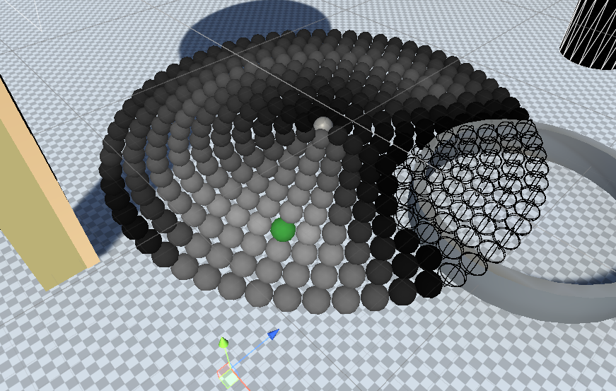
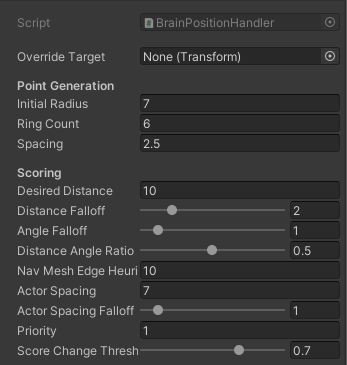
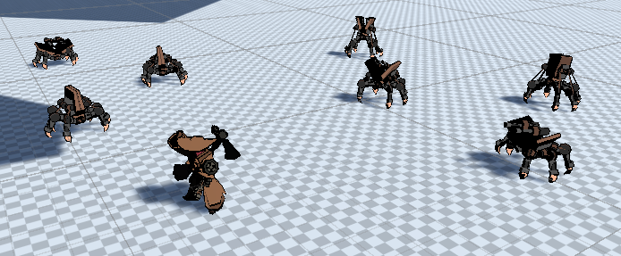

Actor System

The actor system consists of various classes and interfaces for each feature of an actor. Actors themselves inherit from a few interfaces, one of which is IEntity which defines generic entity requirements such as health, dying and respawning.
Every Actor must contain these components:
- Actor.cs - The main Actor script.
- ActorStateManager.cs - The actor's statemachine
- AttackStateManager.cs - Handles data for attacking
- IActorController.cs - A controller for the actor, must inherit from this interface
- (Optional) AnimatorHandler.cs - A wrapper to easily manage animations for an actor
- (Optional) Brain.cs - Allows for an AI to take control of the actor when not being controlled by the player.
Actor
Actors are a special type of entity which can be controlled either by the player or AI. They can be marked as controllable along with a priority to know which to control. Each subscribes themselves to the ActorManager, this handled various duties such as designating a controlled actor (if any) and functions such as getting the nearest actor to a point. Actors are also responsible for input handling and passing them to the controller, when controlled, the new Unity Input System is used, if a brain is controlling, it can send inputs to the ActorController instead.
Input Buffer
Since this game uses fighting game elements a buffer is provided to each actor to increase the ease of inputting combos and attacks. Certain actions such as attacking or jumping are buffered by calling the buffer's Add() method and passing a BufferAction. BufferAction is a class, it includes a type enum detailing the action (attack_light, attack_heavy, jump, etc), how long it should linger, the delegate to fire when it is available and a snapshot of certain inputs at the time of buffering.
The delegate is a boolean function which determines if the BufferAction can fire. When the buffer checks the action and this delegate returns true, the BufferAction is consumed. Typically the delegate should attempt to do something and return whether it succeeds or not. The snapshot of inputs is required as certain moves require chord button combinations (crouch + attack for example) in these cases we want the attack to resolve to be the same at the time of input, the input snapshot struct doesn't require much data, only some bools such as CrouchHeld.
Actor Audio
Actor also provides methods to play sound clips, they have assignable audio sources for each channel (SoundEffect, Voice, Weapon) but will by default create one of each if none exist. Their methods simply require a clip to be passed, the channel to play it on and whether it should be OneShot, from this it attempts to find a free source, otherwise it'll play on an already playing source. Handling audio like this means other systems don't need to set their own sources or how the actor's sources work and can easily play sounds through them.
Interaction
This system is very prototyped right now so I won't go into too much detail. Each actor can scan for "interactables" nearby, if a button is pressed, the interactable fires whatever action it was assigned. Interactable actions are assigned, which implement the IInteractEffect interface, via the inspector (The subclass picker script I use to serialize interfaces wasn't made by myself). This approach is incredibly modular as any combination of effects can easily be assigned to an interactable or reused with other scripts.
Actor State Manager
The state machine consists of state subclasses which inherit from the abstract ActorBaseState class. States can defined several methods such as OnEnter(), OnExit(), UpdateState(), FixedUpdateState(), LateUpdateState(), StateTransitions() and Transition(). The first 5 are self explanatory, StateTransitions() handles all checks for whether the state should transition to another state and Transition() handles checks for whether the current state can be transitioned to.
The manager itself has a number of ways for systems to interact with it. An ActorStateType enum is provided to reference a specific state without an instance, but also supports generic methods for passing the state type directly.
For example:
public void SwitchState<T>() where T : ActorBaseState
public void SwitchState(ActorStateType newState)
Attack State Manager
The attack state manager handles attacking and frame data. This includes determining "cancels", when an attack can be cancelled directly into another action.
Attacks for the combat system are ScriptableObjects and use a modular approach, having multiple smaller actions playing at set times throughout the attack, some of these actions include: Activating a hitbox, playing VFX or changing the actor's velocity.
Similarly, hitboxes are also ScriptableObjects, instances can easily have their hit data adjusted, including the quantity and placement of hitboxes.
Due to ScriptableObjects not being MonoBehaviours it is less suitable to check hits using colliders or triggers.
Instead, Physics.OverlapSphereNonAlloc is used which doesn't generate any garbage, this is especially important as it is likely to be called frequently.
Interfaces are used for hit and hurt responders so objects can decide how entities should react and validate hits.
Actor Controller
Controllers use interfaces due to the potential variety between them, all of them won't simply be walking and jumping.
BaseController is a simple controller designed for use with actors, it uses the Kinematic Character Controller (KCC) asset to handle physics and other interactions such as standing on a moving platform. The base controller supports basic movement such as walking, sprinting and jumping.
The main player controller inherits from the base controller and adds features such as dashing, wall running, double jumping and bounce jumping. The controller handles most movement within the UpdateVelocity() method called by KCC, it will resolve how to alter the velocity using the inputs the controller is passed, typically by either Actor.cs or Brain.cs.
The controller is also responsible for certain other features such as handling the character mesh, as sometimes we want the character mesh to face a different direction to where their character capsule is placed. Rotations are handled within UpdateRotation() which is also called by KCC, this handles both rotation of the player capsule and child mesh.
Gravity
The game implements a system similar to Super Mario Galaxy, where fields of gravity can be placed to reorient the player. Because of this, I commonly have to be very cautious to not use worldspace as a reference for many transforms and instead rely on local space. This is fairly simple usually but requires plenty of testing to ensure any new features work with it.
The actual gravity handling isn't too complicated. Gravity fields are simply triggers with a GravityField script attached defining its properties. These include: gravity orientation (A set Vector3, or align with the object's local Y axis, or align to the object's centre), gravity strength and priority.
Objects with a gravity receiver component attached will react when inside these fields by having the Gravity of their controllers adjusted accordingly. These receivers keep track of the fields they are in (in case multiple overlap) and only assign the highest priority gravity. As to not have to iterate through their fields constantly, these checks are only called OnTriggerExit() and OnTriggerEnter(), the field triggers also have their own collision layer to filter by.
Animator Handler
This is a simple wrapper for the animator, its main use is to allow requests to play similarly to the animator, but will validate the request first before attempting to play or set a property to avoid errors.
Brain
This handles the AI of an actor, I opted to use my own controllers rather than NavMeshAgents because NavMeshAgents can be rather rigid and don't work well with atypical controllers (for example a rolling ball), I do still use NavMesh Paths for navigation however.
As the project is still being worked on, brains currently control actor behaviour, positioning and basic attacking. A state machine is used for the actor's behaviour, determining what it should do and how it should react at a given time. The state machine implementation used for this differs to the actor one however, as transitions are defined when adding states to the machine rather than by the states themselves. This is so that Behaviours can be created, these are rulesets for an actor such as being: Passive, Neutral or Agressive, leading them to not attack, fight back or attack on sight respectively.
Each brain is given a behaviour which creates the necessary states and transitions for the state machine. An example state used by the aggressive state is EngageTargetBvrState which follows the target and attempts to attack them:
// Find where we should go to around our target
if (Mathf.Abs(_targetPosition.sqrMagnitude - _brain.PositionHandler.TargetPosition.sqrMagnitude) > _followThreshold)
{
_targetPosition = _brain.PositionHandler.TargetPosition;
_brain.SetDestination(_brain.PositionHandler.TargetPosition, true);
_inPosition = false;
}
// Get into the first position
else if (!_inPosition && _brain.HasReachedDestination())
{
_inPosition = true;
}
// Strafe around
else if (_strafeRadius > 0 && _brain.HasReachedDestination() && _strafeTimer.IsFinished)
{
// Strafe around position
// Find a new destination
var randomDirection = Random.insideUnitSphere * _strafeRadius;
randomDirection += _targetPosition;
NavMeshHit hit;
if (NavMesh.SamplePosition(randomDirection, out hit, _strafeRadius, NavMesh.AllAreas))
{
var finalPosition = hit.position;
_brain.SetDestination(finalPosition, false, _strafeSpeed);
_strafeTimer.Start();
}
}
Brain Position Handler
The brain position handler is responsible for sampling points around the current target, scoring them and determining which position the actor should go to. A point sampler script uses concentric rings of points are used to sample the positions themselves, where the point density and number of rings can be adjusted through script parameters. An array of these points is stored by the handler which then scores validates and scores them.
If a point isn't in sight of the player it is deemed invalid and won't be scored:
private bool ValidatePosition(Vector3 position)
{
if (NavMesh.Raycast(Target.position, position, out var hit, NavMesh.AllAreas))
return false;
return true;
}
Distance Score
The score is generated by calculating the difference between the desired distance over the maximum distance. A falloff is then applied by adjusting the exponent of a power operation on the score.
public static float ScorePositionByDistance(Vector3 samplePosition, Vector3 targetPosition, float desiredDistance, float falloff, float maximumDistance)
{
// Calculate the radial distance of the point from the origin
float actualDistance = (samplePosition - targetPosition).magnitude;
// Calculate the absolute difference between the actual and desired distance
float distanceDifference = 1 - Mathf.Abs(actualDistance - desiredDistance) / maximumDistance;
// Apply the falloff power to the difference
float rawScore = Mathf.Pow(distanceDifference, falloff);
float normalizedScore = Mathf.Clamp01(rawScore);
return normalizedScore;
}
Angle Score
The dot product between the direction vectors of (actorPosition - targetPosition) and (samplePosition - targetPosition) is calculated and normalised between 0 and 1. The falloff is applied the same way as distance with a Mathf.Pow operation on the score.
public static float ScorePositionByAngle(Vector3 samplePosition, Vector3 targetPosition, Vector3 position, float falloff)
{
Vector3 A = (position - targetPosition).normalized;
Vector3 B = (samplePosition - targetPosition).normalized;
float dot = (Vector3.Dot(A, B) + 1) / 2;
// Apply the falloff power to the difference
float rawScore = Mathf.Pow(dot, falloff);
return rawScore;
}
Edge Score
This score calculates itself based on the distance from nearby NavMesh edges. It uses NavMesh.FindClosestEdge() and compares the sqrMagnitude from the position to the edge divided by the scorer's weighting. If no edge was found the score is set to 1.
public static float ScorePositionByNavMeshEdgeDistance(Vector3 samplePosition, float weighting)
{
if (NavMesh.FindClosestEdge(samplePosition, out var hit, NavMesh.AllAreas))
{
return Mathf.Clamp01((hit.position - samplePosition).sqrMagnitude / weighting);
}
return 1f;
}
Spacing Score
This score requires knowing each brain's intended positions. So that brains don't need direct references to all other brains a static dictionary of intended positions is defined, where the BrainPositionHandler instance is its key. Each handler can then iterate through the dictionary and for every brain that isn't itself and doesn't have a lower priority it will reduce its score:
public static float ScorePositionByAgentIntentions(Vector3 samplePosition, float spacing, float falloff, BrainPositionHandler requester)
{
float score = 1f;
foreach (KeyValuePair entry in BrainPositionHandler._intendedPositions)
{
if (entry.Key == requester) continue; // It's us!
if (entry.Key.Priority < requester.Priority) continue; // Lower priority than us; ignore them.
float distance = Vector3.Distance(samplePosition, entry.Value);
if (distance < spacing)
{
score -= Mathf.Pow(((spacing - distance) / spacing), falloff);
}
}
return score;
}
The handler has a weighting float variable between 0 and 1 which it uses to combine the distance and angle scores, the other two scorers are multiplied on top if they're enabled. All of this together provides a result like this:  The green position is the handler's intended position, a score of 1 is white and 0 is black, wireframe spheres are invalid positions. This example showcases a dense quantity of sample points, in actual use less than 3 times this quantity of points will be used.  The system is modular for a variety of enemy behaviours by providing many exposed variables to tweak positiong as required. One not yet discussed is the score change threshold, as is the handler would be very unperformant and so rather than sampling and scoring every update, the handler instead will attempt to maintain the current intended position, so long as its score lies above the score threshold, even if there would be better scoring positions. This change vastly improves performance and enemies still maintain great positioning. 